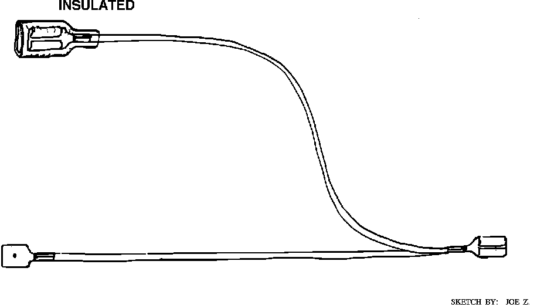

Electrical / Mechanical Repair
DIGITAL VOLT/OHM METER
Use a digital volt/ohm meter (DVOM) with a minimum 10 mega-ohms internal impedance when testing an ECM or related components, unless use of an analog meter is specified by a testing procedure. Analog meters have low internal impedance and cause circuit "loading" in low voltage circuits, resulting in inaccurate measurements and possible damage to components. Use of a DVOM is necessary to obtain accurate measurements and avoid damaging low voltage ECM circuits and components.
LED TEST LIGHT
Do-It-Yourself LED Test Light:

A test light which uses a light emitting diode (LED) will be required to perform some tests. Do not use test lights with incandescent bulbs for testing computer controlled circuits, ECM damage may result. An LED test light can be purchased from your local Volkswagen dealership (part #VAG1527B) or one can be constructed with parts available from any electronics supply store (see diagram). The Volkswagen special tool uses two LEDs and depending on the polarity of connections being tested, one or the other will illuminate (DC circuits), or if testing an AC circuit, both LEDs will flash alternately
TEST CONNECTORS
Self-made Parallel Test Leads:

Directly probing ECM connector and component connector terminals can result in damaged terminals and create future problems. A pin-out box such as the Volkswagen tester VAG 1598 is the best method of testing at the ECM harness connector. There are special test connectors available from Volkswagen (kit #VW1594) that plug directly into harness connectors. These connectors allow safe testing of circuits where limited access to wiring harness connectors makes testing difficult. Connectors are not universal for all models. Be sure to use the proper connector for the application (consult your Volkswagen dealer). Self made connectors can be an inexpensive alternative. Be sure to use the proper size wire terminals for the device or connector you wish to test.
Some test procedures require the use of special test leads to gain parallel access to circuits for testing without piercing or splicing wires. These connectors are available from your Volkswagen dealer. Self made connectors can be an inexpensive alternative. Be sure to use the proper size wire terminals for the device or connector you wish to test. In cases where you need to connect several test leads to a single device or harness connector, use color coded wire for easy identification of which terminal is being tested and be sure ends of leads are not touching each other Insulate terminals if necessary.
TESTING PROCEDURES
Always follow recommended testing procedures. Never ground or apply voltage to a circuit unless specified by a testing procedure. ECM's provide a regulated constant low voltage source to some circuits, which may require a minimum resistance (impedance) to operate. Directly grounding or applying battery power to these circuits could damage the ECM and cause a system failure.